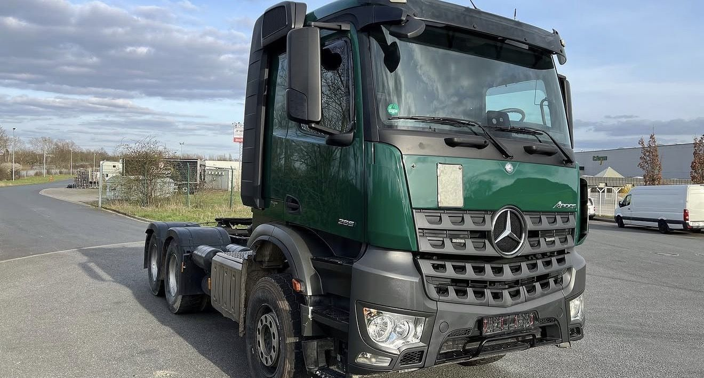

Eine Autobetonpumpe ist auf der Baustelle oft das teuerste Fahrzeug. Sie fährt den Beton nicht selbst, sondern pumpt ihn aus dem Fahrmischer über einen langen Mast genau dorthin, wo er gebraucht wird: in die Decke im fünften Stock, in das Fundament hinter dem Haus oder in die Schalung einer Brücke.
Wer eine gebrauchte Betonpumpe kaufen oder verkaufen will, merkt schnell, dass sie anders bewertet wird als ein normaler LKW. Kilometer sagen wenig, die Pumpe und der Mast fast alles. In diesem Beitrag erklären wir die Bauarten, die Bezeichnungen, die wichtigen Unterlagen und was den Wert einer gebrauchten Pumpe bestimmt.
Was ist eine Autobetonpumpe?
Eine Autobetonpumpe besteht aus drei Teilen auf einem LKW-Fahrgestell:
- Pumpe: Meist eine Zweizylinder-Kolbenpumpe. Sie wird hydraulisch über einen Nebenabtrieb vom LKW-Motor angetrieben. Eine Rohrweiche schaltet zwischen den beiden Förderzylindern um, damit der Beton gleichmäßig fließt.
- Verteilermast: Ein faltbarer Arm aus mehreren Segmenten, in dem die Förderleitung verläuft. Am Ende hängt der Endschlauch, den ein Mitarbeiter auf der Baustelle führt.
- Abstützung: Ausleger, die das Fahrzeug beim Pumpen sicher abstützen. Wie breit die Stützen ausfahren, entscheidet darüber, ob die Pumpe auf engen Baustellen überhaupt aufgestellt werden kann.
Andere Namen sind Mastpumpe, LKW-Betonpumpe oder einfach Pumpe. Gemeint ist fast immer dasselbe.
Welche Arten von Betonpumpen gibt es?
Neben der Autobetonpumpe gibt es weitere Bauarten, die beim Kauf oft verwechselt werden:
- Autobetonpumpe: Pumpe und Mast auf einem eigenen LKW. Der Beton kommt aus einem separaten Fahrmischer.
- Pumpen-Fahrmischer: Ein Fahrmischer mit eigener Pumpe und kurzem Mast, auf Baustellen auch „Pumi“ genannt. Er bringt den Beton mit und pumpt ihn selbst ein, ideal für kleinere Mengen. Wer nach einem Betonmischer-LKW mit Pumpe sucht, meint meist dieses Fahrzeug.
- Stationäre Betonpumpe: Eine Pumpe ohne Mast, die über lange Rohrleitungen fördert, etwa im Hochhaus- oder Tunnelbau.
- Anhängerpumpe: Eine kleinere Pumpe auf einem Anhänger, die per Schlauch fördert.
- Schlauchpumpe: Kleine Pumpen für Mörtel, Estrich oder kleine Betonmengen.
In diesem Beitrag geht es vor allem um die Autobetonpumpe, denn sie wird als Nutzfahrzeug gehandelt.
Was bedeuten Angaben wie 36 m oder 36-5?
Die wichtigste Zahl an einer Autobetonpumpe ist die vertikale Reichhöhe in Metern. Eine 36-Meter-Pumpe erreicht mit senkrecht ausgefahrenem Mast rund 36 Meter Höhe. Die seitliche Reichweite ist immer etwas kürzer, weil der Mast vom Drehturm auf dem Fahrzeug aus startet.
Bei manchen Herstellern folgt eine zweite Zahl. Sie nennt die Anzahl der Mastarme: 36-5 bedeutet 36 Meter Reichhöhe mit fünf Armen. Mehr Arme machen den Mast beweglicher, etwa um unter eine Decke oder durch eine Öffnung zu fahren.
Dazu kommt die Faltung, also die Art, wie der Mast zusammengelegt wird:
- Rollfaltung: Die Arme rollen sich ein. Das spart Länge.
- Z-Faltung: Die Arme klappen zickzackförmig auf und ab. Das erleichtert das Arbeiten unter niedrigen Hindernissen.
- Kombinationen aus beiden findet man bei vielen größeren Pumpen.
Wie viele Achsen braucht eine Betonpumpe?
Je länger der Mast, desto schwerer das Fahrzeug. Als grobe Orientierung gilt, je nach Hersteller und Bauart:
- Drei Achsen: kleinere Pumpen mit kurzen Masten
- Vier Achsen: die verbreitete Mittelklasse, etwa um 36 Meter
- Fünf Achsen und mehr: große Pumpen mit 45 Metern und mehr
Große Pumpen liegen oft über den Gewichtsgrenzen, die für normale LKW gelten, und fahren deshalb mit Ausnahmegenehmigung und Erlaubnis der Behörden. Für Käufer ist das wichtig: Die Erlaubnis bekommt der jeweilige Antragsteller, nach dem Kauf muss der neue Halter sie also selbst beantragen.
Hersteller und Fahrgestelle
Bei den Aufbauten sind in Deutschland vor allem Putzmeister und Schwing verbreitet, dazu Hersteller wie CIFA und Sermac. Die Fahrgestelle kommen von den bekannten LKW-Herstellern, häufig Mercedes-Benz, MAN, Volvo, Scania und DAF. Welche Unterschiede es zwischen den Baustellen-Baureihen von Mercedes-Benz gibt, steht in unserem Beitrag Arocs oder Actros?.
Für den Wert einer Pumpe zählt der Aufbau deutlich mehr als das Fahrgestell. Ein bekannter Pumpenhersteller mit guter Ersatzteilversorgung ist für Käufer im In- und Ausland ein starkes Argument.
Ist eine Betonpumpe mautpflichtig?
In vielen Fällen nicht. Die LKW-Maut gilt für Fahrzeuge, die für den Güterkraftverkehr bestimmt sind. Eine Autobetonpumpe befördert aber keine Güter, sie arbeitet. Deshalb sind Betonpumpen in der Regel nicht mautpflichtig. Maßgeblich ist der Eintrag in den Fahrzeugpapieren, häufig sind sie als Sonderfahrzeug oder selbstfahrende Arbeitsmaschine eingetragen. Um unnötige Kontrollen zu vermeiden, können Halter ihre Pumpe freiwillig bei Toll Collect als nicht mautpflichtig registrieren lassen.
Anders beim Fahrmischer: Er transportiert Beton und ist damit mautpflichtig. Mehr dazu in unserem Beitrag zum Betonmischer-LKW.
Prüfungen und Unterlagen
Betonpumpen und Verteilermasten fallen unter die Betriebssicherheitsverordnung. Der Betreiber muss sie regelmäßig von einer zur Prüfung befähigten Person prüfen lassen. Art und Abstände der Prüfungen legt er in seiner Gefährdungsbeurteilung fest, dazu kommen die Vorgaben des Herstellers, vor allem für den Mast. Die Ergebnisse stehen im Prüfbuch.
Für Kauf und Verkauf heißt das: Das Prüfbuch ist eines der wichtigsten Dokumente überhaupt. Ohne nachvollziehbare Prüfungen kann ein Käufer die Pumpe nicht einfach einsetzen, und das drückt den Preis.
Diese Unterlagen sollten bei einer gebrauchten Autobetonpumpe vorhanden sein:
- Zulassungsbescheinigung Teil I und II
- Prüfbuch mit den Prüfungen von Pumpe und Mast
- Betriebsanleitung und Ersatzteilkatalog des Aufbaus
- Wartungsnachweise für Fahrgestell und Pumpe
- Nachweise zu getauschten Verschleißteilen wie Förderzylindern, Rohrweiche und Förderleitung
- Unterlagen zur Fernsteuerung
- bei großen Pumpen: die bisherige Ausnahmegenehmigung als Orientierung
Betonpumpe gebraucht kaufen: Darauf sollten Sie achten
Wenn Sie eine gebrauchte Autobetonpumpe kaufen möchten, sind diese Punkte entscheidend:
- Reichhöhe und Faltung passend zu Ihren Aufträgen. Eine zu große Pumpe kostet unnötig Gewicht und Genehmigungen, eine zu kleine verliert Aufträge.
- Pumpenstunden statt nur Kilometer. Eine Pumpe hat einen eigenen Betriebsstundenzähler, viele erfassen zusätzlich die geförderte Betonmenge. Diese Werte sagen mehr als der Tachostand.
- Prüfbuch lückenlos? Fragen Sie nach den letzten Prüfungen von Mast und Pumpe.
- Abstützbreite. Sie entscheidet, wo die Pumpe aufgestellt werden kann.
- Ersatzteile und Service. Gibt es für diesen Aufbau eine Werkstatt in Ihrer Nähe?
- Euro-Norm des Fahrgestells. Wegen der Mautfreiheit spielt sie seltener eine Rolle als beim Fahrmischer, kann aber für Umweltzonen wichtig sein. Mehr dazu in unserem Beitrag zu den Euro-Normen bei LKW.
- Probelauf. Lassen Sie den Mast vollständig ausfahren und die Pumpe laufen, bevor Sie unterschreiben.
Gebrauchte Nutzfahrzeuge aus unserem Bestand finden Sie unter Fahrzeuge, Baufahrzeuge und Baumaschinen im Verkauf auf der Seite Baumaschinenhandel.
Betonpumpe verkaufen: Diese Angaben braucht ein Ankäufer
Wer seine Betonpumpe verkaufen möchte, bekommt schneller ein belastbares Angebot, wenn diese Angaben von Anfang an vorliegen:
- Hersteller und Typ des Aufbaus, zum Beispiel die Reichhöhe und die Anzahl der Arme
- Baujahr des Aufbaus und Erstzulassung des Fahrgestells
- Pumpenstunden, Kilometerstand und, falls vorhanden, die geförderte Betonmenge
- Fahrgestell mit Achsen, Motorleistung und Euro-Norm
- Datum der letzten Prüfung laut Prüfbuch
- Fotos: Fahrzeug von allen Seiten, Mast eingeklappt, Pumpe, Bedienstand, Typenschild des Aufbaus und Kilometerstand
- Standort des Fahrzeugs
Was beim Verkauf eines Nutzfahrzeugs allgemein zu beachten ist, etwa beim Kaufvertrag und bei der Abmeldung, erklärt unser Beitrag Nutzfahrzeug verkaufen: Was Sie beachten müssen.
Was ist eine gebrauchte Betonpumpe wert? Oft weniger, als Verkäufer erwarten
Eine neue Autobetonpumpe kostet ein Vielfaches eines normalen LKW. Viele Verkäufer schließen daraus, dass auch die gebrauchte Pumpe viel wert sein muss. Der Markt sieht das oft nüchterner:
- Der Käuferkreis ist klein. Betonpumpen kaufen fast nur Pumpendienste, Bauunternehmen mit eigener Pumpe und Händler. Wer verkaufen will, findet deutlich weniger Interessenten als bei einer Sattelzugmaschine.
- Pumpe und Mast entscheiden. Ein gutes Fahrgestell hilft wenig, wenn die Pumpe viele Stunden hat oder beim Mast eine größere Prüfung ansteht.
- Verschleißteile kosten. Förderzylinder, Rohrweiche und Leitungen sind teuer. Ein Käufer rechnet ein, was er bald tauschen muss.
- Genehmigungen beginnen von vorn. Bei großen Pumpen muss der neue Halter die Erlaubnisse für die Fahrten selbst beantragen.
- Inseratspreise sind Wunschpreise. Was in Börsen steht, ist noch nicht verkauft.
- Ein Händler hat Kosten. Transport, Standzeit, Prüfungen und das Risiko eines kleinen Marktes müssen aus der Differenz gedeckt werden.
Am aussagekräftigsten sind deshalb konkrete Angebote von Käufern, die Betonpumpen wirklich übernehmen und weiterverkaufen können.
Betonpumpe verkaufen an die ECS GmbH
Wir kaufen Autobetonpumpen und Betonmischer ebenso an wie Kipper, Baustellen-LKW und andere Baufahrzeuge, vom einzelnen Fahrzeug bis zum ganzen Fuhrpark. Unser Sitz ist Gehrden bei Hannover, angekauft wird in ganz Deutschland.
- Über 30 Jahre Erfahrung im Fahrzeughandel und ein Netzwerk von über 250 Partnern
- Wir kaufen selbst an: Ihr Vertragspartner ist die ECS GmbH
- Angebot in den meisten Fällen noch am selben Tag, wenn Daten und Fotos vorliegen
- Abholung an Ihrem Standort
- Auch für den Export: Um Ausfuhrpapiere, Verzollung und Transport kümmern wir uns
Alle Einzelheiten zum Ankauf von Baufahrzeugen stehen auf unserer Seite Bau- und Kommunalfahrzeuge verkaufen. Wie ein Ankauf bei uns abläuft, zeigen wir unter Unsere Arbeit.
Möchten Sie wissen, was wir für Ihre Betonpumpe anbieten? Schicken Sie uns die Daten über die Kontaktseite.
Hinweis: Dieser Beitrag dient der allgemeinen Information und ersetzt keine Rechts- oder Steuerberatung. Alle Angaben ohne Gewähr, Stand: 17. November 2026. Genannte Marken und Modellbezeichnungen gehören ihren jeweiligen Inhabern. Die ECS GmbH ist ein unabhängiger Händler und steht in keiner Verbindung zu den Herstellern.